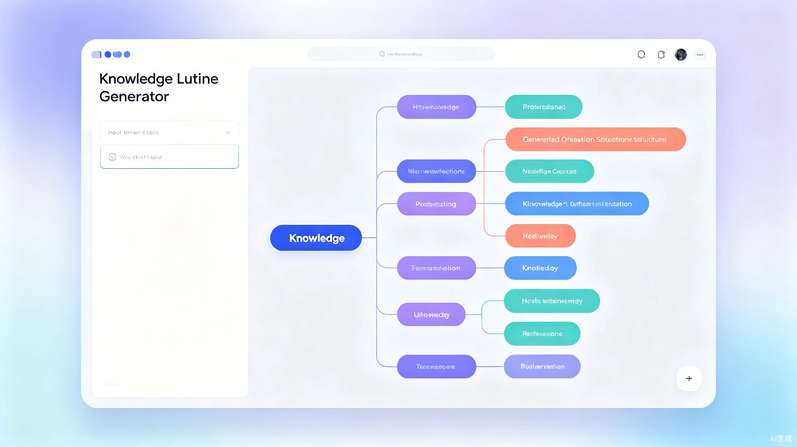
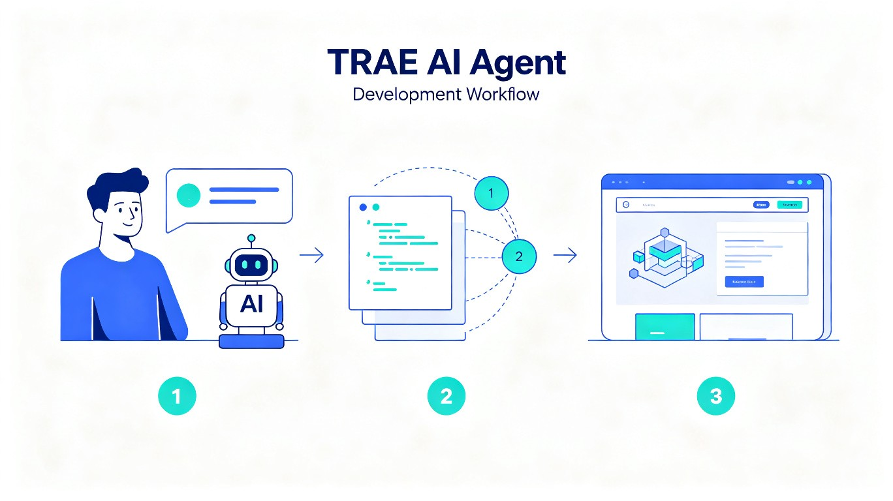
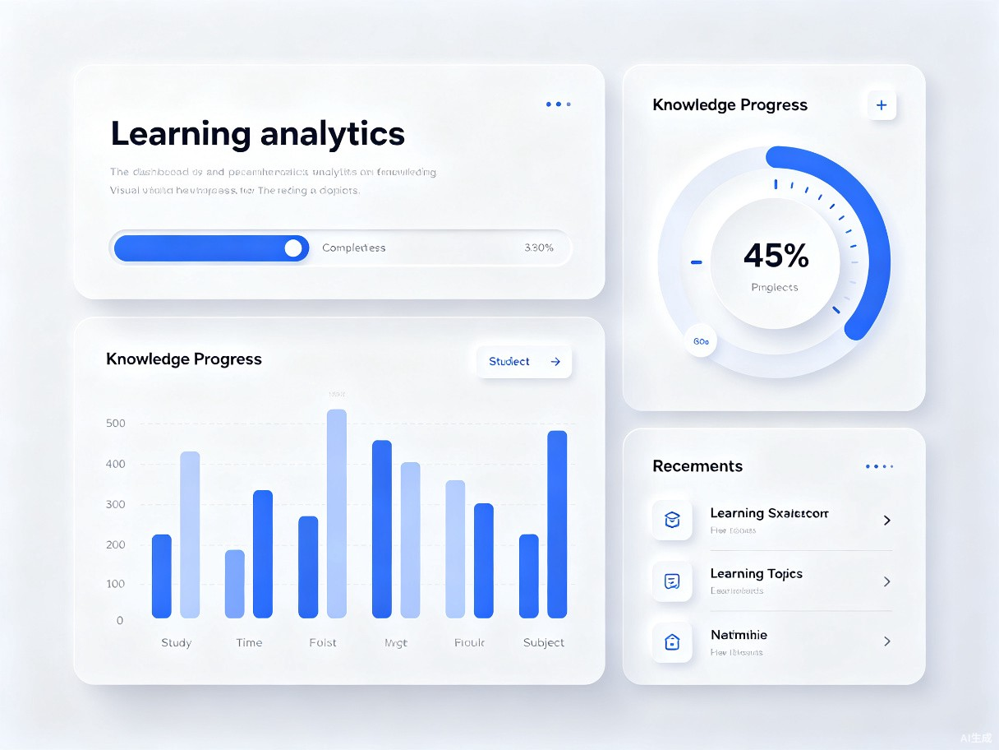

知纲 · AI 知识大纲生成器
输入一个知识点，30秒生成结构化学习大纲。从零到一，用 TRAE 2 天完成从想法到可交互 Demo。
[ ] 中的内容请替换为你自己的项目信息。保持结构不变，用真实的内容和截图替换示例，就能快速产出高质量的参赛作品帖。
📌 报名帖链接：[你的社区报名帖链接]

1 Demo 简介
是什么
知纲是一款基于大语言模型的 AI 知识大纲生成 Web 应用。用户只需输入一个学习主题（如"机器学习"、"西方哲学史"、"Python 入门"），系统就能在 30 秒内生成一份结构清晰、层级分明的知识大纲，帮助学习者快速建立知识体系。
面向谁
核心用户是学生、自学者、知识工作者——那些面对陌生领域不知从何学起、需要快速搭建知识框架的人。无论是备考、做研究，还是跨界学习新领域，知纲都能帮你找到最佳切入点。
核心功能
智能大纲生成
输入任意主题，AI 自动生成 3-5 层深度的结构化知识大纲，覆盖核心概念、关键理论和实践方向。
可视化知识图谱
将大纲以交互式思维导图的形式呈现，支持展开/折叠节点，直观把握知识的全局结构。
一键导出分享
支持导出 Markdown、PDF、图片等多种格式，方便保存、打印或分享给同学和同事。
2 Demo 创作思路
灵感来源
每次接触一个新领域，我都会面临同一个问题：不知道从哪开始学。搜出来的资料要么太浅，要么太散，花了半天还没摸到门道。我就想：能不能有个工具，输入主题就能给我一张"知识地图"？
刚好 TRAE 大赛提供了这样一个契机——用 AI 开发 AI 工具，本身就是一件很有意思的事。
想解决的问题
- 信息过载：网上学习资源太多，但缺乏结构化的引导，初学者容易迷失方向
- 入门困难：面对陌生领域，不知道先学什么、后学什么，学习路径不清晰
- 效率低下：手动整理知识大纲费时费力，还容易遗漏重要知识点
为什么做这个方向
我做了三个判断：
- 需求真实：几乎每个学习者都遇到过"不知道怎么入门"的痛点，用户群体广泛
- AI 适配性强：知识梳理和结构化正是大语言模型的强项，产品形态与 AI 能力高度契合
- 开发周期可控：核心功能清晰，2 天内可以做出可用的 MVP，适合比赛节奏
最初我还想加"AI 答疑"、"学习进度追踪"等功能，但考虑到开发时间有限，最终决定只聚焦"大纲生成"这一个核心场景，把它做到极致。MVP 阶段，少即是多。
3 Demo 体验地址
💡 体验提示：推荐尝试输入"机器学习"、"西方哲学史"、"投资理财入门"等主题，感受不同领域的大纲生成效果。移动端和桌面端均已适配。
4 TRAE 实践过程
这是我第一次用 TRAE 完整开发一个项目。整个过程可以用四个字形容：超乎想象。从写第一行代码到部署上线，只用了 2 天时间——这在以前是不敢想的。

开发时间线
需求分析 + 技术选型
用 TRAE 梳理产品需求，确定技术栈（React + TypeScript + TailwindCSS），初始化项目结构。TRAE 直接帮我生成了完整的项目脚手架。
核心功能开发
接入大模型 API，实现大纲生成逻辑。最惊艳的是：我描述了想要的交互效果，TRAE 直接写出了完整的思维导图组件，包括拖拽、缩放、节点展开等功能。
UI 打磨 + 导出功能
优化界面设计，添加动效，实现 Markdown / PDF / 图片导出。TRAE 甚至帮我设计了渐变色板和排版规范，审美完全在线。
部署上线 + 测试
用 TRAE 配置部署流程，一键部署到 Vercel。修复了几个小 bug，做了移动端适配，项目顺利上线。
关键开发步骤截图

当我跟 TRAE 说"给这个思维导图加个节点展开的动画"，它不仅写出了完整的动画代码，还主动优化了性能——在节点数量多时自动降级为简单动画。这种主动思考细节的能力，是我之前用其他 AI 工具没有体验过的。
关键任务 Session ID
以下是开发过程中的关键对话 Session ID，可用于验证作品由 TRAE 开发完成：
📌 小技巧：在 TRAE 中双击任一段对话即可复制 Session ID。建议在开发过程中就把关键对话标记好，省得事后翻找。
5 开发心得（加分项）
用 TRAE 开发的 3 个感受
- 速度提升 5-10 倍：以前要写一周的项目，现在 2 天搞定。省下来的时间可以用在打磨产品细节和用户体验上。
- 降低技术门槛：我对前端动效不太熟，但只要描述清楚想要的效果，TRAE 就能实现。某种意义上，TRAE 就是你的"全栈搭档"。
- 思路更清晰：跟 TRAE 对话的过程，也是在梳理自己的思路。很多时候聊着聊着，方案就自然而然出来了。
给参赛者的建议
- 先想清楚核心功能是什么，不要贪多，MVP 阶段聚焦一个场景就够了
- 善用 TRAE 的代码审查和重构能力，写完一段就让它帮你优化
- 记得保存关键对话的 Session ID，这是你作品的"开发凭证"
- 作品帖要讲清楚"为什么做"，好的故事能让评审眼前一亮